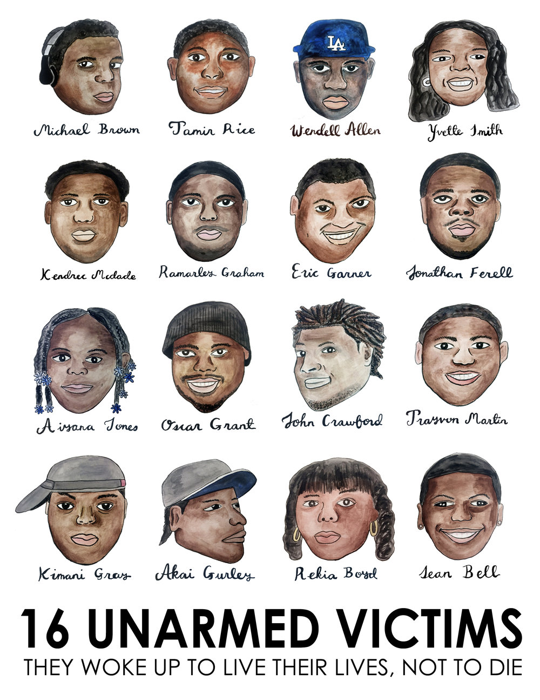

Black Lives Matter

Black Lives Matter is a decentralized political and social movement protesting against incidents of police brutality
and all racially motivated violence against black people. The name Black Lives Matter signals condemnation of the unjust
killings of Black people by police (Black people are far more likely to be killed by police in the United States than
white people) and the demand that society value the lives and humanity of Black people as much as it values the lives and
humanity of white people. A decentralized grassroots movement, Black Lives Matter is led by activists in local chapters who
organize their own campaigns and programs. The chapters are affiliated with the Black Lives Matter Global Network Foundation,
a nonprofit civil rights organization that is active in the United States, Canada, and the United Kingdom.

The Black Lives Matter movement has many goals. BLM activists seek to draw attention to the many ways in which Black people
are treated unfairly in society and the ways in which institutions, laws, and policies help to perpetuate that unfairness.
The movement has fought racism through such means as political action, letter writing campaigns, and nonviolent protests.
BLM seeks to combat police brutality, the over-policing of minority neighbourhoods, and the abuses committed by for-profit jails.
Its efforts have included calls for better training for police and greater accountability for police misconduct. BLM activists
have also called for “defunding” the police—that is, reducing police department budgets and investing the freed-up funds in community
social services, such as mental health and conflict-resolution programs. BLM activists have also worked on voter registration and
get-out-the-vote campaigns in Black communities. In addition, BLM programs have celebrated Black artists and writers.
Timeline of Black deaths and protest

2012- Trayvon Martin
George Zimmerman,was acquitted on charges stemming from his fatal shooting of Trayvon Martin,
an unarmed Black teenager, in Sanford, Florida, in February 2012. Zimmerman, had seen Martin walking
in his neighbourhood and called the police because he thought Martin looked “suspicious.” Although police told Zimmerman not to do anything,
he followed Martin, got into an argument with him, and shot and killed him. Zimmerman remained free for weeks after the shooting but was
finally charged with second-degree murder and arrested in April, after demonstrations demanding his prosecution were held in cities across
the United States. At his trial more than a year later, Zimmerman claimed that he had acted in self-defense. His acquittal in July 2013 was
widely perceived as a miscarriage of justice and led to further nationwide protests.
2014- Eric Garner
Eric Garner died after he was wrestled to the ground by a New York police officer on suspicion of illegally selling cigarettes.
While in a choke hold, Mr Garner uttered the words "I can't breathe" 11 times.
The incident - filmed by a bystander - led to protests across the country. The police officer involved was later fired, but was never prosecuted.
It came a year after the Black Lives Matter movement emerged in response to the acquittal of the man who killed teenager Trayvon Martin in Florida.
2014- Michael Brown
Michael Brown, 18, was killed by a police officer, in Ferguson, Missouri, who was responding to reports that Brown had stolen a box of cigars.
The officer, Darren Wilson, stopped his car in front of Brown.
Brown reached into the car and punched Wilson, and in the struggle that followed, he tried to grab the police officer's gun, according to a report by the Department of Justice (DOJ), which was based on forensic evidence and interviews with dozens of witnesses.
One shot was fired and Brown ran off, pursued by Wilson. When he turned back and moved towards Wilson, the fatal shots were fired, according to witnesses.
Although the police officer was cleared of wrongdoing, the DOJ report was scathing about systemic problems in the Ferguson police and racial disparities in the justice system.
The incident led to multiple waves of protests and civil unrest in Ferguson, boosting the Black Lives Matter movement further.
2014- Tamir Rice
Tamir Rice, a boy of 12, was shot dead in Cleveland, Ohio by a police officer after reports of a male who was "probably a juvenile" pointing a gun that was "probably fake" at passers by.
Police claimed that they told Rice to drop the weapon - but instead of dropping it he pointed it at police.
The police confirmed that the gun was a toy after Rice had been shot dead.
The police officer who fired the fatal shots was sacked three years later for lying on his job application form.
In December 2020, the Justice Department said it was closing its investigation into the case as there was not enough evidence to bring federal criminal charges.
2015- Walter Scott
Walter Scott was shot in the back five times by a white police officer, who was later fired and eventually sentenced to 20 years in prison.
Mr Scott had been pulled over for having a defective light on his car in North Charleston, South Carolina, and ran away from the police officer after a brief scuffle.
The killing sparked protests in North Charleston, with chants of "No justice, no peace".
2016- Alton Sterling
Alton Sterling's death led to days of protests in Baton Rouge, Louisiana. Mr Sterling was killed after police
responded to reports of a disturbance outside a shop. The incident was caught on mobile phone footage and spread online.
The two officers involved did not face criminal charges, but one was dismissed and the other suspended from the police.
2016- Philando Castile
Philando Castile was killed while out driving with his girlfriend in St Paul, Minnesota. He was pulled over by the police during a routine check, and told them he was licensed
to carry a weapon, and had one in his possession. He was shot as he was reaching for his licence, according to his girlfriend.
She live-streamed the encounter on Facebook. The officer involved was cleared of murder charges.
2018- Stephon Clark
Stephon Clark died after being shot at least seven times in his grandmother's backyard in Sacramento, California, by police who were investigating a nearby break-in.
Only a mobile phone was found at the scene, and Mr Clark was unarmed.
The release of a police video of the incident sparked major protests in the city.
In March 2019, the authorities announced that the two officers involved would not face criminal prosecution as the officers had feared for their lives, believing Mr Clark had a gun.
2020- George Floyd
George Floyd died after being arrested in Minneapolis and held down by police officers, one of whom had his knee on Mr Floyd's neck for more than nine minutes.
He pleaded that he couldn't breathe, and after his death, protests broke out across the US, and there were demonstrations in other parts of the world.
Former police officer Derek Chauvin - who had knelt on Mr Floyd - was convicted on charges of second-degree murder, third-degree murder and manslaughter after a three-week trial.
Three other officers who were involved in the incident will be tried later this year accused of aiding and abetting Mr Chauvin.